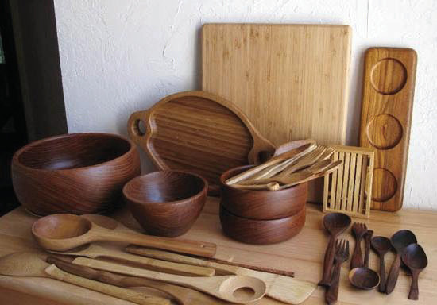

za Wanyiha, Wandali, Wajita, Wahehe, Wahaya Wazaramo na Wanyamwanga walikuwa maarufu kwa usukaji. Jamii hizi zilibadilishana bidhaa za ususi na jamii zingine ili kupata bidhaa ambazo hazikuwapo katika jamii zao.
Mzee Pakawa alimaliza simulizi na wageni walishangilia kwa vifijo.

Fanya uchunguzi kwa kuuliza, kusoma matini au kutembelea maeneo yenye shughuli za ususi na kisha eleza namna ya kuziendeleza shughuli hizo kwa matumizi ya sasa.
Shughuli za uchumi za uchongaji
Alifuata Mzee Kukawa kutoka jamii za Wamakonde. Yeye aliwakilisha shughuli za uchumi katika viwanda vya wachongaji. Mzee Kukawa alianza simulizi kwa kuelezea wageni kuwa:
Uchongaji ulikuwa ni shughuli kuu ya uchumi katika jamii mbalimbali kabla ya ukoloni. Shughuli za uchongaji zilifanywa kwa kuchonga vyombo vya chakula kama bakuli, sahani na vijiko. Pia, jamii zilichonga vinu, michi, vigoda, marimba, chanuo, pawa, vibakuli, miko na viti. Mzee Kukawa alionesha vyombo vya kuchonga katika Kielelezo namba 5.

Kielelezo namba 5: Vyombo vya kuchonga